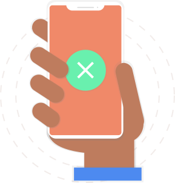

<ion-content>
    <div class="bg">
        
        

        <div class="content">
            <p *ngIf="isSuccess"><strong>SUCCESS</strong></p>
            <p *ngIf="isSuccess">Your booking is successful and confirmation has sent to you mail.</p>
            <p *ngIf="!isSuccess"><strong>FAILED</strong></p>
            <p *ngIf="!isSuccess">Your booking is failed, please try again later.</p>
            <br />
            <form (ngSubmit)="back()">
                <button class="button primary">BACK</button>
            </form>
        </div>
    </div>
</ion-content>